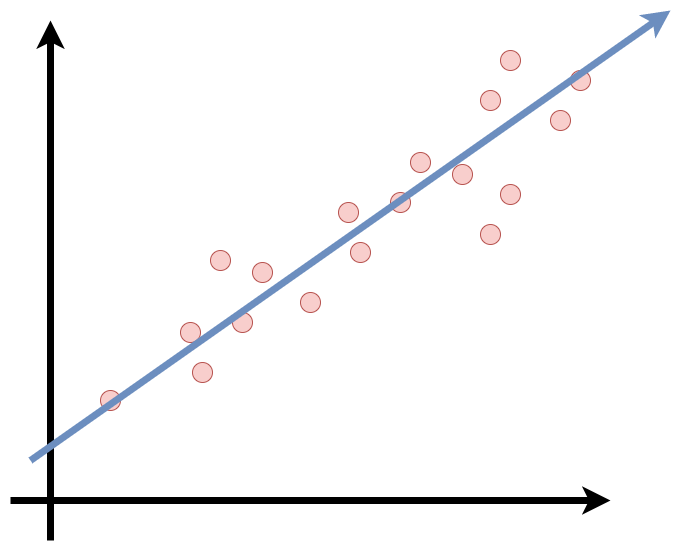
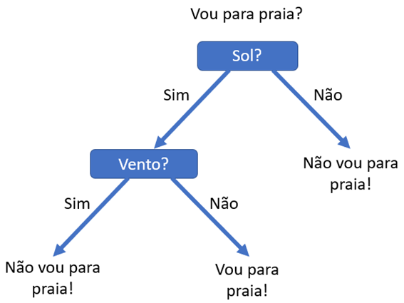

7 Aprendizado supervisionado
7.1 Conceitos iniciais
Aprendizado supervisionado pode ser definido como a tarefa de aprender uma função que mapeia uma entrada em uma saída e isso é feito com base em exemplos e treinos. Em outras palavras, uma máquina é treinada para encontrar soluções chamadas rótulos, onde esses rótulos identificam alguma característica. Apesar de também poder ser usada para regressão, o aprendizado supervisionado tem como tarefa típica a classificação. Um exemplo bem simples de classificação é: suponha que eu queira classificar imagens de animais, nesse caso possuo um banco de dados com imagens de cachorros e gatos. Quero que meu algoritmo classifique as imagens identificando o tipo do animal na imagem. Para isso o algoritmo é treinado utilizando vários exemplos para que ele consiga classificar novas imagens posteriormente. Outra tarefa é predizer um valor com base em características, por exemplo, prever o valor de um carro dado um conjunto de características (quilometragem, idade, marca, etc.) chamadas preditores. Este tipo de tarefa é chamada regressão. Para treinar o sistema é preciso incluir diversos exemplos, assim o banco de dados é separado em treino e teste, onde o é feito o treinamento na base treino para posteriormente serem feitos os testes de predição e avaliação da qualidade do ajuste na base teste.
7.1.1 Dificuldades gerais do machine learnig
Como dito anteriormente, a idéia geral do aprendizado de máquina é construir um algoritmo para solucionar os meus problemas, onde esse algoritmo será treinado com dados. Mas, o que acontece se o meu algoritmo for ruim ou os dados estiverem ruins?
7.1.1.1 Quantidade insuficiente de dados
Falando sobre dados ruins, o primeiro problema é a quantidade de dados. Já parou pra pensar em quão difícil é treinar uma máquina? Voltando ao exemplo anterior, para você aprender a diferenciar um cachorro de um gato quando era criança, bastou alguém lhe apontar qual era qual algumas vezes você se tornou capaz de diferenciar cães de gatos independente das características. Uma máquina não consegue fazer isso facilmente, é necessário uma quantidade grande de dados para a maioria dos algoritmos, até mesmo para problemas simples como o do exemplo citado e para problemas complexos, como reconhecimento de imagem ou fala você pode precisar de milhões de exemplos.
7.1.1.2 Dados de treino não representativos
Como mencionado anteriormente, o treinamento de um algoritmo é feito por meio de uma base de dados, onde está é separada em dados de treinamento e de teste, para que eu possa usá-lo e generalizá-lo em dados futuros. Dados de treinamento que não representem bem os dados que serão usados no futuro podem ser um modelo que não funcionará bem. Utilizando o exemplo do algoritmo de regressão onde o objetivo era prever os valores dos carros com base em suas características. Digamos que meu algoritmo foi treinado com uma base de dados de carros apenas do estado de São Paulo, mas meu algoritmo será utilizado para prever carros de todo o país, pode ser que não funcione tão bem. Os estados podem alterar significativamente os preços dos carros por meio de impostos, por exemplo. É de extrema importância utilizar um conjunto de dados de treino que represente bem os dados que você deseja generalizar. Isso pode não ser uma tarefa fácil, pode encontrar problemas com amostras, principalmente se ela for muito pequena e até mesmo uma amostra grande pode não ser representativa.
7.1.1.3 Qualidade dos dados
Como pode ter imaginado, a qualidade dos dados também é de extrema importância. Dados com discrepâncias, vários erros, e gerados a partir de medições de baixa qualidade fará com que fique mais difícil o seu algoritmo identificar padrões e tomar decisões. Se você convive com pessoas do ramo da ciência de dados em geral, é bem provável que já tenha ouvido alguém dizer algo do tipo: “gastamos a maior parte do nosso tempo para limpar os dados”. Isso não é em vão. Na maioria dos casos, principalmente no ramo de aprendizagem de máquinas é gasto um enorme tempo para limpar os dados pois pode influenciar muito na qualidade do modelo. Por exemplo, se algumas informações forem muito discrepantes, é preciso decidir entre tentar corrigir ou excluí-las. Se uma variável tiver uma quantidade significativa de valores faltantes, deverá ser decidido se essas observações serão excluídas ou se será possível utilizar métodos de imputação de dados. Treinar mais de um modelo com diferentes decisões tomadas sobre os dados também pode ser efetivo.
7.1.1.4 Sobreajustamento dos dados (Overfitting)
O sobreajustamento é um conceito que ocorre quando nosso modelo (não só um modelo de aprendizado de máquinas), se ajusta exatamente aos nossos dados de treinamento. Ouvir isso uma primeira vez pode parecer excelente, ou até mesmo o cenário ideal, afinal, queremos que o nosso modelo se ajuste o máximo possível, certo? bom.. não exatamente. O que acontece neste caso, é que o modelo mostra-se adequado apenas para os dados de treino, como se o modelo tivesse apenas decorado os dados de treino e não fosse capaz de generalizar para outros dados nunca vistos antes. Assim, o desempenho do nosso modelo quando usado em novos dados cai drasticamente. Algumas razões que podem levar a um sobreajustamento: base de treino muito pequena, não contendo dados suficientes para representar bem todos valores de entrada possíveis; grande quantidade de informações irrelevantes (dados ruidosos); treinamento excessivo em um único conjunto de amostra; modelo muito complexo, fazendo com que ele aprenda os ruídos nos dados de treinamento. Agora que sabemos o problema que é um sobreajustamento e as razões que podem levar a isso, precisamos falar sobre como evitar que isso aconteça. Existem algumas técnicas comumente utilizadas.
Regularização: Foi dito anteriormente que uma razão para o sobreajustamento é a complexidade do modelo, então, faz sentido diminuirmos sua complexidade. Isso pode ser feito removendo ou diminuindo o número de parâmetros.
Parada antecipada: Quando um modelo está sendo treinado por rodadas de repetição, é possível avaliar cara uma dessa repetição. Normalmente o desempenho de um modelo melhora a cada repetição, mas chega um momento em que começa a acontecer o sobreajustamento. A ideia da parada antecipada é pausar o treinamento antes que chegue a esse ponto.
Aumento de dados: Essa técnica consiste em aumentar ligeiramente os dados da amostra toda vez que o modelo os processa, ou seja, injetar dados limpos e relevantes nos dados de treino. Isso faz com que os conjuntos de treino pareçam “exclusivos” do modelo, impedindo que ele aprenda suas características. Mas isso deve ser feito com moderação, pode injetar dados que não estão limpos pode fazer mais mal do que bem. Além disso, não é um método garantido.
Existem outras técnicas que podem ser utilizadas para evitar o sobreajustamento. Mas precisamos falar também sobre como detectá-los.
Uma forma “não técnica” e que não deve ser a sua única forma de tentar identificar o sobreajustamento é por meio da visualização gráfica. A visualização gráfica pode ser usada apenas para levantar hipóteses, nunca para tomar uma decisão final. Até mesmo porque nem sempre é possível verificar esse problema visualmente. Talvez a técnica mais eficiente para isso é a Validação Cruzada k-fold (k-fold Cross Validation). Vamos falar sobre posteriormente.
7.1.1.5 Subajustamento dos dados (Underfitting)
Como pode ter imaginado, subajustamento é o oposto do sobreajustamento. Ocorre quando seu modelo é muito simples para aprender a estrutura dos dados. O subajustamento leva a um erro elevado tanto nos dados de treino quanto nos dados de teste. Pode ocorrer quando o modelo não foi treinado por tempo suficiente ou as variáveis de entrada não são significativas o suficiente para determinar uma relação significativa entre as variáveis de entrada e saída. Aqui também estamos em um cenário a ser evitado e apesar de ser contrário ao sobreajustamento, as técnicas tanto para identificar quanto para evitar o problema são semelhantes. Um adendo, geralmente, identificar um subajustamento é mais fácil que identificar um sobreajustamento.
7.1.2 Modelo de Regressão Linear
Já temos uma breve noção sobre o que é aprendizado supervisionado, agora vamos introduzir o funcionamento básico de um modelo. Como foi mencionado, aprendizado supervisionado é usado principalmente para métodos de classificação e regressão. Um modelo de regressão linear, como o próprio nome já diz, se enquadra nos métodos de regressão. A regressão consiste em modelar um valor de previsão com base em variáveis independentes. De forma mais geral, o modelo consiste em fazer uma previsão “simples” calculando uma ponderação entre as somas dos recursos de entrada e uma constante chamada intercepto. Assim, obtemos uma relação linear entre a variável de saída e as variáveis de entrada. A linha de regressão é a linha de melhor ajuste para o modelo.
\[ \hat y = \beta_0 + \beta_1x_1 + \beta_2x_2 + ...+ \beta_nx_n \]
onde:
\(\hat y\) é o valor predito
\(n\) o número de características
\(x_i\) é a \(i^{th}\) característica
\(\beta_j\) é o \(j^{th}\) parâmetro do modelo
Certo, temos uma definição matemática do nosso modelo, mas como posso treiná-lo? Treinar um modelo significa também definir os parâmetros para que o modelo se ajuste melhor aos meus dados. Em outras palavras, um modelo treinado irá se ajustar à melhor linha para prever o valor de \(y\) para um dado valor de \(x\). Assim, ao encontrar os melhores valores de \(\beta 's\) obtemos a melhor linha de ajuste. Para isso, primeiro precisamos de uma medida de quão bem (ou mal) o modelo se ajusta aos meus dados. Posteriormente será discutido quais as medidas mais comuns para avaliação de modelos de regressão.
Existem algumas suposições importantes que devem ser feitas para utilizar um modelo de regressão linear. Estas são algumas verificações formais durante a construção de um modelo de regressão linear, o que garante a obtenção do melhor resultado possível do conjunto de dados fornecido.
Suposição de linearidade: A regressão linear assume que a relação entre a entrada e saída é linear. Pode parecer um pouco óbvio, mas em alguns casos onde, em um primeiro olhar, faça sentido usar uma regressão linear, nossos dados não permitam isso. Pode ser necessário transformar os dados.
Homocedasticidade: Homocedasticidade é uma situação em que o termo de erro é o mesmo para todos os valores de variáveis independentes. Com homocedasticidade, não deve haver uma distribuição padrão clara de dados no gráfico de dispersão.
Erros normalmente distribuídos: A regressão linear assume que o termo de erro deve seguir o padrão de distribuição normal. Se os termos de erro não forem normalmente distribuídos, os intervalos de confiança se tornarão muito amplos ou muito estreitos, o que pode causar dificuldades em encontrar coeficientes. Você pode obter algum benefício usando transformações (por exemplo, log ou BoxCox) em suas variáveis para tornar sua distribuição mais gaussiana.
Multicolinearidade: O modelo de regressão linear não assume nenhuma autocorrelação em termos de erro. Se houver alguma correlação no termo de erro, isso reduzirá drasticamente a precisão do modelo. A autocorrelação geralmente ocorre se houver uma dependência entre os erros residuais. Considere calcular correlações pareadas para seus dados de entrada e remover os mais correlacionados.
7.1.3 Modelo de Regressão logística
Alguns algoritmos de regressão podem ser usados para classificação (o contrário também é válido). A regressão logística é um dos algoritmos mais populares do machine learning e geralmente é usada para estimar a probabilidade de que uma instância pertença a uma classe. Por exemplo, qual a probabilidade de que o objeto de uma imagem seja um cachorro? ou um gato? Neste caso, se a probabilidade estimada for maior que 50%, então o modelo pode prever que naquela imagem tem um cachorro (classe rotulada como “1”), se for menor, prevê que é um gato (classe rotulada como “0”). Este tipo de regressão pode retornar valores categóricos ou discretos, como: Sim ou Não, 0 ou 1, verdadeiro ou falso, entre outros. Mas aqui, ela fornece os valores probabilísticos que estão entre 0 e 1. Apesar de ser semelhante a regressão linear, aqui não ajustamos uma linha de regressão, mas sim uma função logística em forma de “S” que prevê os dois valores máximos (0 ou 1).

A equação de regressão Logística pode ser obtida a partir da equação de Regressão Linear.
\[ \hat y = \beta_0 + \beta_1x_1 + \beta_2x_2 + ...+ \beta_nx_n \]
O problema de usar essa abordagem é que podemos prever probabilidades negativas em alguns casos e valores maiores que 1 em outros. Essas previsões não são sensatas, pois sabemos que a verdadeira probabilidade deve ser um número entre 0 e 1. Para resolver esse problema, devemos modelar \(\hat y\) usando uma função que forneça saídas entre 0 e 1 para todos os valores de \(\hat y\). Na regressão logística usamos a função logística como sendo:
\[ \hat y = \frac{e^{\beta_0+\beta_1X}}{1 + e^{\beta_0+\beta_1X}} \]
Depois de algumas manipulações, chegamos que
\[ \frac{\hat y}{1- \hat y} = e^{\beta_0+\beta_1X} \]
Mas precisamos variar de \(-\infty\) até \(\infty\), então pegue o logaritmo da equação e temos:
\[ \log\bigg[\frac{\hat y}{1- \hat y} \bigg ] = {\beta_0+\beta_1X} \]
Existem alguns tipos de regressão logística:
Binomial: Aqui deve haver apenas dois tipos de possíveis variáveis, como 0 ou 1, Falso ou Verdadeiro, etc.
Multinomial: Pode também haver 3 ou mais tipos não ordenados possíveis da variável dependente, como, cachorro, gato ou tigre.
Ordinal: Na regressão logística ordinal, pode haver 3 ou mais tipos ordenados possíveis de variáveis dependentes, como “baixo”, “médio” ou “alto”.
7.1.4 Medidas de desempenho
Ao desenvolver projetos de Aprendizado de Máquinas no geral, é preciso sempre verificar a qualidade do modelo. Assim como não existe um modelo padrão para resolver todos os problemas, não existe uma única métrica para avaliar a qualidade do modelo. Saber qual métrica é mais apropriada para determinado cenário é crucial, pois escolhas erradas podem gerar modelos problemáticos.
7.1.4.1 Modelos de regressão
Existem algumas métricas importantes para medirmos a qualidade de um modelo de regressão.
Root Mean Squared Error (RMSE): Uma medida muito comum usada em um modelo de regressão é a Root Mean Squared Error (REQM). Em resumo, o REQM é uma medida que mostra o quão espalhados estão esses resíduos. A métrica possui valor mínimo 0 e sem valor máximo. Quanto maior esse número, pior o modelo.
\[ RMSE = \sqrt{\frac{1}{n}\sum_{i = 1}^{n} (\hat y_i - y_i)^2} \]
Uma vantagem dessa métrica é que predições muito distantes do real aumentam o valor da medida com facilidade, o que torna a métrica bem vinda em problemas onde erros grandes não são tolerados.
Mean Absolute Error (MAE): Esta medida é bem simples de entender. Nada mais é que a média do erro que cada ponto tem em relação a linha de regressão. É um pouco parecido com o que RMSE faz, a diferença é que aqui, erros grandes não afetam tanto a medida. A sua interpretação é: quanto maior o MAE, maior é o erro do modelo. Apesar de ser simples, não deve ser usado em todos os modelos. Esta medida é bastante sensível a valores discrepantes (outliers). Portanto, deve-se avaliar os dados antes de utilizar esta métrica.
\[ MAE = \frac{1}{N}\sum|y_i - \hat{y_i}| \]
\(R^2\): R-quadrado é uma medida que visa explicar qual a porcentagem de variância que pôde ser prevista pelo modelo, ou seja, o qua “próximo” as medidas reais estão dos nossos dados. Segue a fórmula:
\[ R^2 = 1 - \frac{\sum(y_i - {\hat{y_i}})^2} {\sum(y_i - {\bar{y}})^2} \]
onde, \(\hat{y_i}\) é o valor predito, \(\bar{y}\) é o valor médio das amostras e \(y_i\) é o valor observado. O valor resultante varia de 0 a 1. Quanto maior o valor, melhor o modelo. Por exemplo, caso tivéssemos avaliando um modelo e tivéssemos \(R^2 = 0.87\), entende-se então que 87% da variância de nossos dados podem ser explicadas pelo modelo. Esta medida possui algumas limitações importantes: só pode ser aplicada perfeitamente para modelos univariados; é uma medida enviesada, pode definição e em casos de overfitting, o valor da métrica ainda continua alto.
7.1.4.2 Modelos de classificação
Acurácia: A acurácia nos diz quantos de nossos exemplos foram classificados corretamente e é dada pela seguinte fórmula:
\[ \mbox{acurácia} = \frac{TP + TN}{TP + TN + FP + FN} \]
Onde TP = True Positive (Verdadeiro Positivo), TN = True Negative (Verdadeiro Negativo), FP = False Negative (Falso Negativo) e FN = False Negative (Falso Negativo).
A métrica então é definida pela razão entre os acertos e o total (erros + acertos). É uma métrica extremamente fácil de ser usada e interpretada. Por exemplo, se tenho 100 observações e meu modelo classificou 80 corretamente, então a acurácia do meu modelo é 80%. Apesar de simples, essa métrica pode não ser adequada em alguns casos.
Uma desvantagem é que podemos obter uma acurácia alta, mas o nosso modelo pode ter uma performance inadequada. Por exemplo, pense que temos um conjunto de dados de animais com 100 observações, sendo 90 cachorros e 10 gatos. Se tivermos um modelo que sempre classificará todas as observações como cachorro, ainda teríamos um modelo com acurácia de 90%. É uma métrica boa, mas não estamos avaliando o nosso modelo de uma boa forma. Se introduzirmos novos dados que venham de uma forma mais equilibrada, ou seja, com quantidade de cachorros e gatos parecidas, o modelo se comportaria de forma ruim. Portanto, para conjuntos de dados desbalanceados, outras métricas são mais eficientes.
Outra desvantagem é que esta medida atribui o mesmo peso para ambos os erros. Por exemplo, em um modelo que classifica exames de câncer entre positivo e negativo para a doença. Um modelo com acurácia 90% aparentemente é um bom modelo onde os 10% de erro podem ter sido falsos negativos ou falsos positivos. Porém, o erro por falso negativo aqui é bem mais grave.
Precisão: Essa métrica é definida pela razão entre a quantidade de observações classificadas corretamente como positivos e o total de classificados como positivos, segue a fórmula:
\[ \mbox{precisão} = \frac{TP}{TP + FP} \]
Esta medida atribui um peso maior para os erros por falso positivo. Pode ser entendida como a resposta para a pergunta: das observações classificadas como positivos, quantos são verdadeiramente positivos? então, neste caso, se a precisão fosse de 90%, é esperado que a cada 100 observações classificadas como positivos, apenas 90 são de fato positivos.
Sensibilidade: Essa métrica avalia então a capacidade do modelo detectar com sucesso resultados classificados como positivos em relação a todos os pontos de dados positivos.
\[ \mbox{sensibilidade} = \frac{TP}{TP + FN} \]
Especificidade: Ao contrário da sensibilidade, a especificidade avalia a capacidade do modelo detectar resultados negativos. Segue a fórmula:
\[ \mbox{especificidade} = \frac{TN}{TN + FP} \]
7.1.4.3 Matriz de confusão
Matriz de confusão é uma matriz usada para avaliar o desempenho de um modelo de classificação. A matriz compara os valores de destino reais com os previstos pelo modelo. A matriz é N x N onde é N é o número de classes. Para um problema de classificação binária teríamos uma matriz 2 x 2. As matrizes de confusão revelam quando um modelo confunde consistentemente duas classes, simplificando a determinação da probabilidade de os resultados de um modelo serem confiáveis.
| Predito | Negativo | Positivo |
|---|---|---|
| Negativo | Verdadeiro Negativo (TN) | Falso Negativo (FN) |
| Positivo | Falso Positivo (FP) | Verdadeiro Positivo (TP) |
Na matriz de confusão colocamos os valores reais nas colunas e os valores preditos nas linhas. Assim o cruzamento das linhas e das colunas passam a ser nossas métricas. (não é incomum vermos versões invertidas)
7.1.5 Curva AUC-ROC
Quando queremos verificar ou visualizar o desempenho de um modelo de classificação binária (0, 1), podemos utilzar a AUC (Area Under The Curve) ROC (Receiver Operating Characteristics). Está é uma das métricas de avaliação de desempenho de modelos de classificação mais importantes.
7.1.5.1 O que é a curva AUC-ROC
A curva ROC é uma métrica de avaliação para problemas de classificação binária. É uma curva de probabilidade que plota o TPR (sensibilidade) contra o FPR (1 - especificidade). A AUC (Area Under the Curve) é a medida da capacidade de um classificador para distinguir entre classes e é usada com um resumo da curva ROC. Quanto maior a AUC, melhor o modelo está em distinguir entre classes positivas e negativas. Por analogia, quanto maior a AUC, melhor o modelo está em distinguir entre pacientes com a doença e sem a doença.
Quando AUC = 1, o modelo é capaz de distinguir perfeitamente os pontos positivos e negativos corretamente. Porém, se AUC = 0, o modelo estaria predizendo todos valores negativos como positivos e vice e versa. Quando AUC= 0,5, o modelo não é capaz de distinguir os valores. Neste caso o modelo está prevendo cada classe de forma aleatória ou de forma constante para todos os dados. Já quando 0,5 < AUC < 1, há uma grande chance de que o modelo consiga distinguir os valores negativos das classes positivas. Aqui o modelo é capaz de detectar mais números de verdadeiros positivos e verdadeiros negativos do que falsos negativos e falsos positivos.
A curva ROC é produzida calculando e plotando a taxa de verdadeiros positivos em relação à taxa de falsos positivos para um único classificador em vários limites . Por exemplo, na regressão logística, o limiar seria a probabilidade prevista de uma observação pertencente à classe positiva. Normalmente, na regressão logística, se uma observação é prevista como positiva com probabilidade > 0,5, ela é rotulada como positiva. No entanto, poderíamos realmente escolher qualquer limite entre 0 e 1 (0,1, 0,3, 0,6, 0,99, etc.) — e as curvas ROC nos ajudam a visualizar como essas escolhas afetam o desempenho do classificador.
A figura abaixo demonstra como alguns modelos teóricos podem plotar a curva ROC. A linha cinza pontilhada representa um classificador que não é melhor do que a adivinhação aleatória, seria a linha diagonal. Um modelo com uma taxa de verdadeiros positivos de 100% e falsos negativos de 0% seria plotado sobre a linha da esquerda e a de cima. Quase todos os exemplos do mundo real cairão em algum lugar sobre essas duas linhas tendo o cenário 0,5 < AUC < 1, como exemplo, a linha azul da figura. Normalmente procuramos um classificador que mantenha uma alta taxa de verdadeiros positivos e, ao mesmo tempo, uma baixa taxa de falsos positivos. Embora seja útil visualizar a curva ROC, em muitos casos podemos reduzir essas informações a uma única métrica, a AUC.

Um grande ponto positivo da curva ROC é que ela permita que encontremos um limite de classificação adequado ao nosso problema específico
Por exemplo, se estivéssemos avaliando um classificador de spam de e-mail, gostaríamos que a taxa de falsos positivos fosse muito, muito baixa. Não queremos que alguém perca um e-mail importante para o filtro de spam só porque nosso algoritmo foi muito agressivo. Provavelmente até permitiríamos uma boa quantidade de e-mails de spam reais (verdadeiros positivos) através do filtro apenas para garantir que nenhum e-mail importante fosse perdido.
Por outro lado, se nosso classificador está prevendo se alguém tem uma doença terminal, podemos aceitar um número maior de falsos positivos (diagnosticado incorretamente a doença), apenas para garantir que não perderemos nenhum verdadeiro positivo (pessoas que realmente têm a doença).
Além disso, também podemos comparar o desempenho de diferentes classificadores para o mesmo problema.
Existem outras métricas de desempenho que não foram apresentadas aqui, mas devemos ressaltar alguns pontos. Não existe uma métrica certa ou errada, devemos apenas nos atentar e buscar a que melhor atende o nosso problema. É possível também utilizar mais de uma métrica para o mesmo modelo.
7.1.6 Validação Cruzada (Cross-Validation)
Até aqui falamos um pouco sobre alguns problemas que podem ser encontrados no aprendizado de máquinas e superficialmente sobre dois modelos de regressão. Vamos falar agora sobre um método que é bem utilizado para validar a estabilidade do seu modelo. Como mencionamos anteriormente, não podemos simplesmente ajustar um modelo aos meus dados de treino e esperar que ele funcione perfeitamente, ou até mesmo esperar que aquele seja o melhor modelo possível para fazer alguma validação. Falamos um pouco sobre isso quando discutimos sobre sobreajustamento e subajustamento. Então, vamos nos aprofundar sobre um método que nos garanta que o nosso modelo obteve a maioria dos padrões dos dados corretos sem captar muitos ruídos.
O que é validação cruzada?
Validação cruzada é uma técnica para avaliar um modelo de aprendizado de máquina e testar o seu desempenho. Pode ajudar a comparar e selecionar um modelo mais apropriado para o nosso problema. É bem fácil de entender, de implementar e tende a ter um viés menor do que outros métodos usados para o mesmo objetivo. Por isso é uma ferramenta tão utilizada. Tanto a validação cruzada quanto outros algoritmos funcionam de maneira semelhante, consiste em: dividir o conjunto de dados em treino e teste; treinar o modelo no conjunto treino; validar o modelo no conjunto teste e repetir as etapas anteriores algumas vezes. Dentro da validação cruzada existem diversas técnicas onde umas são mais utilizadas. Já mencionamos anteriormente o método
k-fold, mas exite também os métodos, hold-out, leave-p-out, k-fold stratified, entre outros. Vamos falar sobre alguns deles.
Hold-Out Cross Validation: Esta é a técnica mais simples e comum. Ele consiste em remover uma parte dos dados de treinamento e usá-la para obter previsões do modelo treinado no restante dos dados. A estimativa de erro informa como nosso modelo está se saindo em dados não vistos ou no conjunto de validação. A implementação é extremamente fácil e existem pacotes que podem ajudar nisso. Mas apesar disto, esse método tem um grande desvantagem. Se estivermos trabalhando com um conjunto de dados que não é completamente uniforme, podemos acabar em uma situação difícil após a separação. O conjunto de treino pode não representar muito bem o conjunto de teste, ou seja, os conjuntos podem ser bem diferentes, onde um é mais fácil do que o outro.
K-Fold Cross Validation: O K-Fold pode se apresentar como um técnica que minimiza as desvantagens do método Hold-Out apresentando uma nova maneira de dividir o banco de dados. Neste método os dados são divididos em k subconjuntos (daí o nome). O método de validação é repetido k vezes, onde, a cada vez, um dos k subconjuntos é usado como conjunto de teste e os outros k-1 conjuntos são unidos para formar o conjunto de treinamento. A estimativa de erro é a média de todas as k tentativas. Como cada ponto de dados chega a um conjunto de validação exatamente uma vez e a um conjunto de treinamento k-1 vezes, isso reduz significativamente o viés. Como “regra geral”, k=5 ou k=10 é escolhido, mas não existe nada fixo. Comparando diretamente ao método Hold-Out, o método K-Fold tende a ser melhor, mas também possui uma desvantagem. Aumentar o k resultado no treinamento de mais modelos e o processo de treinamento pode ser custoso e demorado.
Leave-P-Out Cross Validation: Este método consiste em criar todos os conjuntos de treinamento e testes possíveis usando p amostras como conjunto de teste. Em outras palavras, deixa p pontos de dados fora dos dados de treino, ou seja, se houver n pontos de dados na amostra original, np amostras são usadas para treinar o modelo p pontos são usadas como conjunto teste. Como se pode imaginar, este método é extremamente exaustivo, tendo em vista que é preciso validar o modelo para todas as combinações possíveis e para um p demasiadamente grande, pode ser computacionalmente inviável.
O método de validação cruzada também pode nos ajudar a ajustar hiperparâmetros, falaremos sobre isso posteriormente.
7.1.7 Hiperparâmetros
Já discutimos anteriormente sobre treinamento de um modelo e mencionamos os Hiperparâmetros, vamos agora discutir de um modo geral o que eles são e qual a sua importância. Hiperparâmetros são atributos que controlam o treinamento de um modelo. Eles ajudam a direcionar um modelo, melhorando seu desempenho e evitando que ele aprenda somente com os dados de treino, ou seja, evitar o overfitting e underfitting. Por exemplo, no processo de configuração de uma rede neural, precisamos decidir quantas camadas ocultas de nós precisam ser usadas entre a camada de entrada e a camada de saída, assim como quantos nós cada camada vai usar. Esses parâmetros não estão diretamente ligados aos dados de treino e não são aprendidos diretamente pelos modelos. Parâmetros são as variáveis que o algoritmo de Machine Learning usa para prever resultados com base na entrada de dados históricos. Já os hiperparâmetros são variáveis que são especificadas ao longo do processo de construção do modelo. Com isso os hiperparâmetros são fornecidos antes dos parâmetros, ou podemos dizer que os hiperparâmetros são utilizados para avaliar os parâmetros ideais do modelo. Encontrar a melhor combinação de hiperparâmetros pode fazer a diferença no seu modelo.
Exemplos comuns de hiperparâmetros
Número de árvores em um algoritmo de Random Forest.
A escolha da função custo ou perda que o modelo usará.
Número de cadamadas ocultas em redes neurais.
Quantidade mínima de observações dentro de um nó.
Taxa de divisão de treino e teste.
Proporção de linhas para sortear por árvore.
7.1.7.1 Ajuste de hiperparâmetro
O ajuste de hiperparâmetro consiste em encontrar a configuração de hiperparâmetro que irá resultar no melhor desempenho do modelo. A busca manual pode ser utilizada para localizar os hiperparâmetros ótimos, utilizando uma abordagem de acerto e erro, mas obviamente isso levaria muito tempo. As técnicas mais utilizadas para isso são o Grid Search ou Random Search.
Grid Search: Essa é uma técnica de ajuste que tenta calcular os valores ótimos dos hiperparâmetros. É calculado exaustivamente o desempenho do modelo para cada combinação de todos os hiperparâmetros fornecidos previamente e escolhe, a partir dai, o valor ideal para os hiperparâmetros. Apesar de ser uma técnica que foge da abordagem manual, é um processo demorado e computacionalmente caro.
Random Search: Random Search é um método que usa combinações aleatórias de hiperparâmetros para treinar o modelo. As melhores combinações são usadas. A diferença para o Grid Search é que aqui não é especificado um conjunto de valores para os hiperparâmetros. Em vez disso, os valores de cada hiperparâmetro são amostrados a partir de uma distribuição. Essa técnica permite controlar o número de tentativas de combinações de hiperparâmetros, diferente da Grid Search, onde todas as combinações possíveis são tentadas.
7.2 Agoritmos de Aprendizado de máquina
7.2.1 Árvores de Decisão
As Árvores de Decisão são algoritmos de aprendizado supervisionado que podem ser utilizados tanto para classificação quanto para regressão. Possui uma estrutura hierárquica em árvore, tendo um nó raiz, ramificações, nós internos e nós folhas. Na análise de decisão, uma árvore de decisão pode ser usada para representar visualmente e explicitamente decisões e tomadas de decisão.

Na imagem acima podemos ver uma representação de uma árvore de decisão, que começa com um nó raiz, que não possui ramificações de entrada, a partir da qual a árvore se divide em ramos. Os ramos alimentam os nós internos ou nós decisão. Cada ramificação contém um conjunto de atributos ou regras de classificação, associado a um determinado rótulo de classe, que pode ser encontrado na extremidade da ramificação. O final dos ramos que não se dividem mais são os nós folha. Os nós folha representam todos os resultados possíveis dentro do conjunto de dados.
O tipo de estrutura de fluxograma é fácil de ser interpretado e cria uma representação que permite que diferentes grupos entendam melhor porque uma determinada decisão foi tomada.
O algoritmo de Árvore de Decisão possui uma estratégia que busca identificar os pontos de divisão ideias dentro de uma árvore. O processo de divisão é repetido até que todos ou a maioria dos registros tenham sido classificados em um rótulo de classe específico. Classificar ou não todos os pontos de dados como conjuntos depende principalmente da complexidade do algoritmo. Árvores menores ou mais simples, são mais fáceis de atingir nós de folhas puros, onde pontos de dados caem em uma única classe, além de serem mais fáceis de visualizar e interpretar as decisões. Em contrapartida, aumentar o tamanho de uma árvore dificulta manter essa pureza, podendo resultar em poucos dados caindo em uma determinada subárvore, como consequência, isso pode levar ao overfitting. Portanto, esses algoritmos têm preferência por árvores pequenas e simples, adicionando complexidade apenas quando realmente necessário. Árvores de decisão geralmente crescem de forma arbitrária, portanto é preciso decidir quais recursos escolher e quais condições usar para dividir uma árvore, além de saber quando parar essa divisão.
7.2.1.1 Medidas de seleção de atributo
Como mencionado anteriormente, uma Árvore de decisão é feita a partir de atributos e decidir qual atributo colocar na raiz ou em diferentes níveis da Árvore pode ser complicado. Aqui a aleatoriedade na escolha não é uma boa opção, podendo gerar resultados com baixa precisão. Para o problema de seleção de atributos, temos alguns critérios como: Entropia e ganho de informação, índice de Gini , taxa de ganho, entre outros.
- Entropia: Entropia é uma medida de aleatoriedade (impureza) dos valores de uma amostra. Quanto maior a entropia, mais difícil é tirar conclusões dessa informação. É definida pela seguinte fórmula:
\[ Entropia(S) = - \sum_{i=1}^{c} p_{i}\,log_2\,pi \]
Onde, S representa o Estado atual e \(p_i\) é a probabilidade de um evento \(i\) do estado S.
Os valores variam entre 0 e 1. Para selecionar o melhor recurso para dividir e encontrar a Árvore ideal, deve-se buscar o atributo com menor entropia.
- Ganho de Informação: Ganho é usado para medir o quão bem um atributo separa os exemplos de treino de acordo com sua classificação alvo. Quanto maior o ganho de informação, melhor. Ou seja, na construção de uma Árvore de Decisão buscamos um atributo que retorne o maior ganho de informação e a menor entropia. Ganho de informação é calculado a diferença entre a entropia antes da divisão e a entropia média após a divisão do conjunto de dados. Segue a fórmula:
\[ IG(Y,X) = Entropia(Y) - Entropia (Y|X) \]
Podemos visualizar a fórmula como: subtraímos a entropia de \(Y|X\) da entropia apenas de \(Y\) para calcular a redução da incerteza sobre \(Y\) dada uma informação adicional \(X\) sobre \(Y\).
- Índice de Gini: Também conhecido como impureza de Gini, o Índice de Gini calcula a quantidade de probabilidade de um recurso específico que é classificado incorretamente quando selecionado aleatoriamente. Se todos os elementos estiverem vinculados a uma única classe, ela pode ser chamada de pura. É calculado subtraindo a soma das probabilidades ao quadrado de cada classe de um. Segue a fórmula:
\[ GN = 1- \sum_{i=1}^{n} (p_i)^2 \]
Onde \(pi\) denota a probabilidade de um elemento ser classificado para uma classe distinta. O Índice de Gini é semelhante a entropia. Varia entre 0 e 1, onde 0 expressa a pureza da classificação e 1 indica a distribuição aleatória dos elementos em várias classes.
Taxa de Ganho: Taxa de ganho tenta diminuir o viés do ganho de informação. Leva em consideração o número de ramificações que resultariam antes de fazer a divisão. Ele corrige o ganho de informação levando em consideração as informações intrínsecas de uma divisão. A Informação Intrínseca (II) é definida como a entropia das proporções do subconjunto de dados. Segue a fórmula: \[ II = -\sum_{i=1}^n \frac{N(t_i)}{N(t)} *log{_2} \frac{N(t_i)}{N(t)} \]
Onde \(N(t_i)\) é o número de vezes que \(t_i\) ocorre dividido pela contagem total de eventos \(N(t)\) onde \(t\) é o conjunto de eventos.
A Taxa de Ganho então é dada por:
\[ GR = \frac{Ganho\ de\ Informação}{Informação\ intrínseca} \]
Para todas as variáveis preditoras, aquela que fornece a maior taxa de ganho é escolhida para a divisão.
7.2.1.2 Tipos de Árvores de Decisão
Mencionamos anteriormente que o algoritmo de Árvores de Decisão pode ser usado tanto para classificação quanto para regressão, e é claro, existem vários tipos de algoritmos. Vamos falar um pouco sobre os mais famosos.
ID3 (Iterative Dichotomiser 3): Esse algoritmo usa uma abordagem gananciosa de cima para baixo para construir a Árvore. Em outras palavras, ele começa a construir a Árvore de cima e de para cada iteração seleciona o melhor recurso no momento para criar um nó. Geralmente é usado apenas para problemas de classificação com recursos nominais. O algoritmo utiliza o Ganho de Informação para encontrar o melhor recurso.
C4.5: Este algoritmo é uma melhoria em relação ao ID3. Ele pode usar a Taxa de Ganho como função para encontrar o melhor recurso.
CART: CART é uma abreviação de “classification and regression trees” (Árvores de classificação e Regressão). Como o próprio nome já diz, pode ser usado tanto para classificação quanto para regressão. O algoritmo busca o melhor critério através do Índice de Gini.
7.2.1.3 Podando Árvores de Decisão
Como mencionamos anteriormente, Árvores complexas podem causar overfitting, cabe dizer que as Árvores são os algoritmos mais suscetíveis ao overfitting. Em alguns casos, a Árvore poderá se ramificar inúmeras vezes, gerando uma folha para cada observação, ou seja, fornecendo 100% de precisão no conjunto de treino, logo, é preciso ter um limite.
Podar uma Árvore de Decisão consiste em remover partes da Árvore que não fornecem poder para classificar instâncias. A poda pode ser distinguida em:
Pré-poda: A Árvore é interrompida antes de concluir a classificação do conjunto de treinamento. É um método alternativo que tenta interromper o processo de construção da árvore antes que ele produza folhas com amostras muito pequenas. Essa heurística é conhecida como parada antecipada. Em cada estágio de divisão da árvore, é verificado o erro de validação cruzada. Se o erro não diminuir significativamente, então paramos. A parada antecipada pode prejudicar o ajuste, parando muito cedo.
Pós-poda: Normalmente a técnica mais utilizada, permite que a Árvore classifique o conjunto de treinamento antes de podá-la. Este método consiste em, a partir da Árvore não podada, pega uma sequência de subárvores (podadas) e escolher a melhor por meio da validação cruzada. É escolhida a que tem maior precisão no conjunto de treinamento validado cruzadamente.
7.2.1.4 Floresta Aleatória (Random Forest)
A Floresta Aleatória é um algoritmo que funciona a partir de Árvores de Decisão. Ele constrói diferentes Árvores em diferentes amostras e leva combina as saídas para alcançar um único resultado, levando em consideração a maioria de votos para classificação e média em caso de regressão. O algoritmo serve tanto para regressão quanto para regressão, mas aqui temos uma novidade, ele pode lidar com os dois, apesar de apresentar melhores resultados para problemas de classificação.
7.2.1.5 Funcionamento do algoritmo
Antes de falarmos de fato sobre o funcionamento do algoritmo, vamos entender de forma básica o método dos conjuntos. O método dos conjuntos, também conhecido como ensemble methods, pode ser definido resumidamente como, combinar vários modelos. No caso da Floresta Aleatória, uma combinação de Árvores de decisão. Os modelos são combinados e suas previsões são agregadas para identificar o resultado mais popular. Os métodos de conjunto mais populares são bagging e boosting. Em resumo o método bagging, que é usado em Floresta Aleatória, cria um subconjunto de treinamento diferente a partir dos dados de treinamento de amostra com substituição, o que significa que os pontos de dados individuais podem ser escolhidos mais de uma vez. Depos, dependendo do tipo da tarefa, classificação ou regressão, a saída final é baseada na votação da maioria ou a média. O método boosting é utilizado para outros algoritmos como, por exemplo, XGBOOST, portanto, falaremos sobre ele mais pra frente.
Certo, entendido o método dos conjuntos podemos entrar no algoritmo em si. É basicamente uma extensão do método bagging, já que utiliza o método bagging e a aleatoriedade para criar uma floresta não correlacionada de Árvores de Decisão. A aleatoriedade se dá ao fato que o modelo utiliza uma amostragem aleatória do conjunto de dados de treinamento ao construir árvores e subconjuntos aleatórios de recursos considerados ao dividir os nós, o que garante baixa correlação entre as Árvores.
Os algoritmos possuem alguns hiperparâmetros, que como explicado anteriormente, precisam ser definidos antes do treinamento do modelo. Os três principais são: o tamanho do nó, o número de Árvores e o número de recursos amostrados. A partir daí o algoritmo pode ser usado para resolver problemas de regressão ou classificação.
7.2.2 Algoritmos de boosting
Como falamos anteriormente, boosting é uma técnica de método dos conjuntos. Diferente de bagging que trabalha de forma paralela, considerando os modelos independentes uns dos outros, boosting trabalha de forma diferente. Boosting se refere a algoritmos que convertem alunos fracos em alunos fortes. Trabalha de maneira sequencial, ajustando iterativamente o peso da observação de acordo com a última classificação, assim, diminui o erro do viés e constrói preditivos fortes. Em outras palavras, a técnica consiste em, primeiramente, construir um modelo inicial com os dados de treinamento. Depois, um outro modelo é construído visando corrigir os erros do modelo anterior, atribuindo pesos caso uma entrada seja fornecida erroneamente. O processo continua e adiciona modelos até que todo o conjunto de dados de treino seja previsto corretamente ou o número máximo de modelos seja adicionado. Boosting é um algoritmo genérico e não um modelo, vamos então apresentar os principais modelos baseados no método boosting: Adaptative Bossting (AdaBoost), Gradient Boosting e XGBoost.
7.2.2.1 AdaBoost
Antes de entrarmos no algoritmo AdaBoost de fato, vamos relembrar o Algoritmo de Floresta Aleatória. Em Floresta Aleatória, o algoritmo cria diversas Árvores que consistem em um nó inicial com várias nós folhas. Não existem regras quanto ao tamanho de cada Árvore, assim, pode haver umas maiores que outras. No modelo AdaBoost, as Árvores possuem um nível, ou seja, apenas 1 divisão conhecido como Stump (toco).
Reforçando, o algoritmo tem apenas um nó com duas folhas. Tocos são aprendizes fracos, pois as técnicas de reforço preferem isso. Como em AdaBoost o erro do primeiro toco influência nos outros, a ordem dos tocos é muito importante. Reforçando, o algoritmo irá atribuir pesos mais altos aos pontos classificados erroneamente. Todos os pontos que têm pesos maiores recebem mais importância no próximo modelo.
7.2.2.2 Funcionamento do algoritmo
Para entendermos de uma forma um pouco mais clara, vamos fazer um passo a passo. Antes do primeiro passo de fato, todos os pontos de dados irão receber algum peso. Inicialmente, os pesos serão iguais para todos. O peso é calculado na forma \(W = \frac{1}{N}\), onde \(N\) é o número de observações.
Passo 1: Em primeiro lugar, o algoritmo pega o primeiro recurso e cria o primeiro tronco. Ele irá criar o mesmo número de tocos que o número de recursos, a partir daí, temos as primeiras Árvores de Decisão. O modelo então calcula o índice de Gini para cada Árovre e seleciona aquela com o índice mais baixo para ser o primeiro aprendiz base.
Passo 2: O segundo passo é calcular o desempenho do toco com um método conhecido como “Importance” ou “Influence”. É calculado usando a seguinte fórmula:
\[ \mbox{Performance} (\alpha) = \frac{1}{2} log(\frac{1- Erro\ total }{Erro\ total}) \]O valor sempre será um valor entre 0 e 1, onde 0 indica um toco perfeito e 1 um toco horrível. Calcular o desempenho de um toco é importante pois é preciso atualizar o peso da amostra antes de prosseguir para o próximo modelo. Se o mesmo peso for apicado, a saída recebida será a do primeiro modelo. Previsões erradas receberão mais peso, enquanto os pesos das previsões erradas serão diminuídos. Assim, no próximo modelo com os pesos atualizados, sera dada mais preferência aos pontos com pesos maiores.
Passo 3: O próximo passo é atualizar os pesos. A atualização é feita utilizando a seguinte fórmula:
\[ \mbox{Novo peso} = \mbox{peso antigo} * e^{\pm Performance (\alpha)} \] A quantidade \(\alpha\) será negativa quando a amostra for classificada corretamente e positiva quando classificada incorretamente. Vale ressaltar que a soma total de todos os pesos deve ser igual a 1. Em muitos casos os pesos atualizados não irão somar 1, então será necessário normalizar os pesos. A normalização é feita dividindo cada peso pela soma total dos pesos atualizados. Após a normalização dso pesos da amostra, a soma será 1.
Passo 4: Agora, para verificar se os erros diminuíram ou não, a próxima etapa é criar um novo conjunto de dados. Para isso, com base nos novos pesos amostrais, nossas observações serão divididas em baldes, basicamente são intervalos de valores de \(\alpha\). A partir daí, o algoritmo seleciona números aleatórios entre 0 e 1. Ele verifica em qual balde o valor selecionado pertence e seleciona esse registro no novo conjunto de dados. Como registros classificados incorretamente têm pesos amostrais maiores, existe mais probabilidade de serem selecionados várias vezes.
Passo 5: Por fim, com o novo conjunto de dados, o algoritmo cria uma nova Árvore de decisão (toco) e repete o processo desde o primeiro passo até passar por todos os tocos. O processo é repetido até que um erro de treinamento baixo seja alcançado. Suponha um algoritmo simples que tenha construído 3 Árvores de Decisão de maneira sequencial. Assim, o conjunto de dados teste passará por todas as Árvores e, da mesma forma que em Florestas Aleatórias, a classe será selecionada com base na maioria. A partir daí é possível fazer previsões para o conjunto de teste.
7.2.2.3 Gradient Boosting (Aumento de Gradiente)
O modelo Gradient Boosting, também é um modelo de reforço, ou seja, utiliza técnicas de conjunto que pode ser usado tanto para regressão quanto para classificação. Este modelo possui algumas semelhanças com o Ada Boost e como já vimos sobre ele, aqui vamos focar um pouco mais em suas diferenças.
A principal diferença deste modelo para o Ada Boost está no que ele faz com os valores subajustados do seu antecessor. Enquanto Ada Boost ajusta os pesos a cada interação, Gradient Boosting tenta ajustar o novo preditor aos erros residuais cometidos pelo preditor anterior.
Outra diferença é que, enquanto Ada Boost começa construindo um toco, Gradient Boost começa fazendo uma única folha. Esta folha representa uma estimativa inicial para os pesos das amostras. Em caso de um problema de regressão, ao tentar prever um valor contínuo, o primeiro palpite é o valor médio. A partir daí, o modelo constrói uma Árvore. Aqui, a Árvore é maior que um toco, mas o modelo ainda restringe o tamanho dessa Árvore.
7.2.2.4 Funcionamento do modelo
Vamos entender um pouco melhor o funcionamento do modelo fazendo um passo a passo resumido, assim como foi feito em Ada Boost. Vamos exemplificar também focando no modelo de Gradient Boosting para regressão.
Passo 1: Como falamos anteriormente, o modelo começa criando uma única folha. Como estamos em um cenário de dados contínuos, essa folha então é a média das observações. Essa seria nossa previsão para o modelo base.
Passo 2: O próximo passo é calcular os pseudo-resíduos, que basicamente é o valor observado - valor previsto. O termo pseudo-resíduo é baseado na regressão linear, onde a diferença entre os valores observados e os valores previstos resulta em resíduos. Utilizando os resíduos como alvo é possível gerar novas previsões. Neste caso, as previsões serão os valores de erros.
Passo 3: Agora é combinado a folha original com a nova Árvore para fazer uma nova predição a partir dos dados de treinamento.
Em resumo, o algoritmo começa com uma única folha. Em seguida é adicionada uma Árvore com base nos resíduos e dimensiona a contribuição das árvores para a previsão final com a taxa de aprendizado. A partir daí continua adicionando Árvores com base nos erros cometidos pela Árvore anterior.
O modelo possui alguns hiperparâmetros importantes como, o número de estimadores, a profundidade máxima da Árvore, a divisão mínima das amostras, entre outros. Para obter valores precisos desses hiperparâmetros é possível utilizar as técnicas mencionadas anteriormente.
Resumimos bastante os passos e o funcionamento do modelo, mas deve-se ter em mente que existe uma matemática carregada por trás desses modelos. Cada passo, cada função perdida é utilizada por um motivo comprovado.
7.2.3 Support Vector Machine (SVM)
Para finalizar, vamos introduzir um último algoritmo muito conhecido no ramo de aprendizado de máquinas. Support Vector Machine, ou SVM, é um algoritmo de aprendizagem supervisionada muito popular que pode ser usado tanto para classificação quanto para regressão. Entretando, esse algoritmo é usado principalmente para classificação, então, focaremos mais nessa parte.
A ideia basica do algoritmo é relativamente simples: criar uma linha ou um hiperplano que separa os dados em classe para que possamos colcoar facilmente o novo ponto de dados na categoria correta futuramente.
7.2.3.1 Como o modelo funciona
A ideia inicial do SVM é encontrar uma linha ou hiperplano entre os dados de duas classes. O algoritmo então escolhe pontos ou vetores extremos que ajudam a criar o hiperplano. Esses casos extremos são os vetores de suporte (daí o nome). O SVM recebe os dados de entrada e gera uma linha que separa essas classes da melhor forma possível.
Um exemplo bem simples para entender o modelo é: suponha que tenhamos um conjunto de dados com duas classes, bolas vermelhas e quadrados azuis. precisamos então encontrar uma linha que separe esse conjunto de dados em duas classes (vermelho e azul).
Como estamos em um espaço 2-d, uma única linha reta pode separar essa margem. Mas existe uma infinidade de linhas que podem separar essas classes, o SVM então busca encontrar a ideal. Mas como?
O SVM encontra o ponto mais próximo das linhas de ambas as classes. Esses pontos são chamados de vetores de suporte. Esses pontos são chamados de vetores de suporte e a distância entre os vetores e o hiperplano é chamada de margem. O SVM então busca maximizar essa margem, onde, o hiperplano com margem máxima é chamado de hiperplano ótimo.
Certo, mas nem sempre estamos um cenário onde nossos dados estão linearmente organizados. Neste caso, não podemos apenas desenhar uma única linha reta. Neste cenário, precisamos adicionar mais uma dimensão. Se para dados lineares trabalhos com duas dimensões (x e y), para dados lineares teremos uma terceira dimensão (z). Deixamos as coordenadas no eixo z serem governadas pela restrição,
\[z =x^2 + y^2\]
Assim, a coordenada z é basicamente o quadrado da distância do ponto à origem.
Fazendo isso, os dados se tornam linearmente separáveis. Seja z = k, onde k é uma constante. Como \(z =x^2 + y^2\), temos \(k =x^2 + y^2\); que é uma equação de um círculo. Com isso, é possível projetar o separador linar em dimensão superior de volta as dimensões originais usando esta transformação. Concluindo, podemos então classificar os dados adicionando uma dimensão extra a eles, fazendo com que se tornem linearmente separáveis. Encontrar a transformação correta para qualquer conjunto de dados não é tão fácil, mas existem recursos que podem ser usados na implementação do algoritmo para ajudar neste trabalho.
7.3 Considerações finais
Neste capítulo buscamos abordar os principais tópicos do aprendizado supervisionado. O objetivo aqui foi dar uma breve noção sobre o funcionamento dos algoritmos, diferenças nos métodos de funciomanetos, possíveis problemas e dificuldades. Aqui foi apenas o pontapé inicial para que você consiga entender e implementar algoritmos supervisionados.